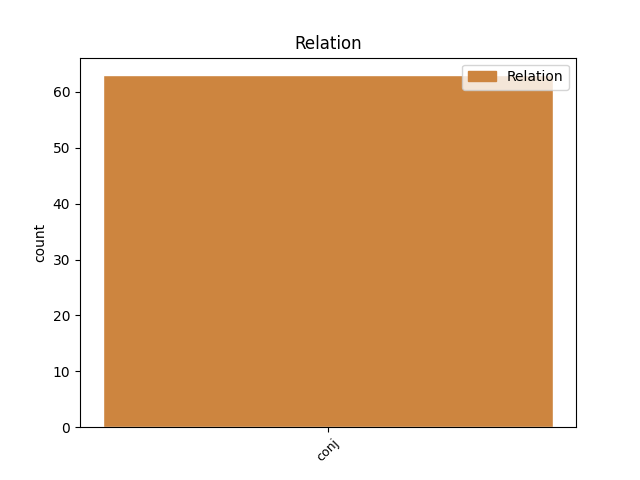

Distribution of features within this leaf


Agreement Rules sorted by frequency.
- When the dependent token is the conjunct(conj) of the head token, and the head token is VERB
1 Les _ _ _ _ 0 _ _ _
2 dauphins _ _ _ _ 0 _ _ _
3 mangent manger VERB V Mood=Ind|Number=Plur|Person=3|Tense=Pres|VerbForm=Fin 0 _ _ _
4 les _ _ _ _ 0 _ _ _
5 poissons _ _ _ _ 0 _ _ _
6 qui _ _ _ _ 0 _ _ _
7 ont _ _ _ _ 0 _ _ _
8 absorbé _ _ _ _ 0 _ _ _
9 des _ _ _ _ 0 _ _ _
10 PCB _ _ _ _ 0 _ _ _
11 de _ _ _ _ 0 _ _ _
12 le _ _ _ _ 0 _ _ _
13 plancton _ _ _ _ 0 _ _ _
14 , _ _ _ _ 0 _ _ _
15 et _ _ _ _ 0 _ _ _
16 ces _ _ _ _ 0 _ _ _
17 PCB _ _ _ _ 0 _ _ _
18 , _ _ _ _ 0 _ _ _
19 étant _ _ _ _ 0 _ _ _
20 solubles _ _ _ _ 0 _ _ _
21 dans _ _ _ _ 0 _ _ _
22 la _ _ _ _ 0 _ _ _
23 graisse _ _ _ _ 0 _ _ _
24 , _ _ _ _ 0 _ _ _
25 s' _ _ _ _ 0 _ _ _
26 accumulent accumuler VERB V Mood=Ind|Number=Plur|Person=3|Tense=Pres|VerbForm=Fin 3 conj _ _
27 chez _ _ _ _ 0 _ _ _
28 les _ _ _ _ 0 _ _ _
29 dauphins _ _ _ _ 0 _ _ _
30 . _ _ _ _ 0 _ _ _
Disagree Examples:
1 Cela _ _ _ _ 0 _ _ _
2 étant _ _ _ _ 0 _ _ _
3 , _ _ _ _ 0 _ _ _
4 je _ _ _ _ 0 _ _ _
5 crois croire VERB V Mood=Ind|Number=Sing|Person=1|Tense=Pres|VerbForm=Fin 0 _ _ _
6 que _ _ _ _ 0 _ _ _
7 les _ _ _ _ 0 _ _ _
8 positions _ _ _ _ 0 _ _ _
9 sont _ _ _ _ 0 _ _ _
10 bien _ _ _ _ 0 _ _ _
11 claires _ _ _ _ 0 _ _ _
12 et _ _ _ _ 0 _ _ _
13 elles _ _ _ _ 0 _ _ _
14 seront être AUX VA Mood=Ind|Number=Plur|Person=3|Tense=Fut|VerbForm=Fin 5 conj _ _
15 consignées _ _ _ _ 0 _ _ _
16 à _ _ _ _ 0 _ _ _
17 le _ _ _ _ 0 _ _ _
18 procès _ _ _ _ 0 _ _ _
19 - _ _ _ _ 0 _ _ _
20 verbal _ _ _ _ 0 _ _ _
21 . _ _ _ _ 0 _ _ _
1 Madame _ _ _ _ 0 _ _ _
2 la _ _ _ _ 0 _ _ _
3 présidente _ _ _ _ 0 _ _ _
4 , _ _ _ _ 0 _ _ _
5 si _ _ _ _ 0 _ _ _
6 le _ _ _ _ 0 _ _ _
7 procès _ _ _ _ 0 _ _ _
8 - _ _ _ _ 0 _ _ _
9 verbal _ _ _ _ 0 _ _ _
10 reflète _ _ _ _ 0 _ _ _
11 correctement _ _ _ _ 0 _ _ _
12 le _ _ _ _ 0 _ _ _
13 vote _ _ _ _ 0 _ _ _
14 de _ _ _ _ 0 _ _ _
15 mon _ _ _ _ 0 _ _ _
16 groupe _ _ _ _ 0 _ _ _
17 , _ _ _ _ 0 _ _ _
18 je _ _ _ _ 0 _ _ _
19 n' _ _ _ _ 0 _ _ _
20 ai avoir VERB V Mood=Ind|Number=Sing|Person=1|Tense=Pres|VerbForm=Fin 0 _ _ _
21 et _ _ _ _ 0 _ _ _
22 n' _ _ _ _ 0 _ _ _
23 aurai avoir VERB V Mood=Ind|Number=Sing|Person=1|Tense=Fut|VerbForm=Fin 20 conj _ _
24 aucune _ _ _ _ 0 _ _ _
25 objection _ _ _ _ 0 _ _ _
26 à _ _ _ _ 0 _ _ _
27 formuler _ _ _ _ 0 _ _ _
28 . _ _ _ _ 0 _ _ _
1 En _ _ _ _ 0 _ _ _
2 conséquence _ _ _ _ 0 _ _ _
3 , _ _ _ _ 0 _ _ _
4 mon _ _ _ _ 0 _ _ _
5 groupe _ _ _ _ 0 _ _ _
6 soutiendra soutenir VERB V Mood=Ind|Number=Sing|Person=3|Tense=Fut|VerbForm=Fin 0 _ _ _
7 la _ _ _ _ 0 _ _ _
8 position _ _ _ _ 0 _ _ _
9 commune _ _ _ _ 0 _ _ _
10 et _ _ _ _ 0 _ _ _
11 espère espérer VERB V Mood=Ind|Number=Sing|Person=3|Tense=Pres|VerbForm=Fin 6 conj _ _
12 que _ _ _ _ 0 _ _ _
13 la _ _ _ _ 0 _ _ _
14 législation _ _ _ _ 0 _ _ _
15 sera _ _ _ _ 0 _ _ _
16 rapidement _ _ _ _ 0 _ _ _
17 promulguée _ _ _ _ 0 _ _ _
18 , _ _ _ _ 0 _ _ _
19 qui _ _ _ _ 0 _ _ _
20 nous _ _ _ _ 0 _ _ _
21 fournira _ _ _ _ 0 _ _ _
22 un _ _ _ _ 0 _ _ _
23 outil _ _ _ _ 0 _ _ _
24 de _ _ _ _ 0 _ _ _
25 plus _ _ _ _ 0 _ _ _
26 dans _ _ _ _ 0 _ _ _
27 notre _ _ _ _ 0 _ _ _
28 lutte _ _ _ _ 0 _ _ _
29 pour _ _ _ _ 0 _ _ _
30 que _ _ _ _ 0 _ _ _
31 le _ _ _ _ 0 _ _ _
32 transport _ _ _ _ 0 _ _ _
33 à _ _ _ _ 0 _ _ _
34 le _ _ _ _ 0 _ _ _
35 sein _ _ _ _ 0 _ _ _
36 de _ _ _ _ 0 _ _ _
37 l' _ _ _ _ 0 _ _ _
38 union _ _ _ _ 0 _ _ _
39 atteigne _ _ _ _ 0 _ _ _
40 le _ _ _ _ 0 _ _ _
41 plus _ _ _ _ 0 _ _ _
42 haut _ _ _ _ 0 _ _ _
43 niveau _ _ _ _ 0 _ _ _
44 de _ _ _ _ 0 _ _ _
45 sécurité _ _ _ _ 0 _ _ _
46 possible _ _ _ _ 0 _ _ _
47 . _ _ _ _ 0 _ _ _
1 La _ _ _ _ 0 _ _ _
2 position _ _ _ _ 0 _ _ _
3 commune _ _ _ _ 0 _ _ _
4 inclut inclure VERB V Mood=Ind|Number=Sing|Person=3|Tense=Past|VerbForm=Fin 0 _ _ _
5 pratiquement _ _ _ _ 0 _ _ _
6 tous _ _ _ _ 0 _ _ _
7 les _ _ _ _ 0 _ _ _
8 amendements _ _ _ _ 0 _ _ _
9 acceptés _ _ _ _ 0 _ _ _
10 par _ _ _ _ 0 _ _ _
11 la _ _ _ _ 0 _ _ _
12 commission _ _ _ _ 0 _ _ _
13 , _ _ _ _ 0 _ _ _
14 harmonise harmoniser VERB V Mood=Ind|Number=Sing|Person=3|Tense=Pres|VerbForm=Fin 4 conj _ _
15 les _ _ _ _ 0 _ _ _
16 exigences _ _ _ _ 0 _ _ _
17 minimales _ _ _ _ 0 _ _ _
18 applicables _ _ _ _ 0 _ _ _
19 à _ _ _ _ 0 _ _ _
20 les _ _ _ _ 0 _ _ _
21 examens _ _ _ _ 0 _ _ _
22 de _ _ _ _ 0 _ _ _
23 les _ _ _ _ 0 _ _ _
24 conseillers _ _ _ _ 0 _ _ _
25 à _ _ _ _ 0 _ _ _
26 la _ _ _ _ 0 _ _ _
27 sécurité _ _ _ _ 0 _ _ _
28 et _ _ _ _ 0 _ _ _
29 , _ _ _ _ 0 _ _ _
30 en _ _ _ _ 0 _ _ _
31 deuxième _ _ _ _ 0 _ _ _
32 lecture _ _ _ _ 0 _ _ _
33 , _ _ _ _ 0 _ _ _
34 nous _ _ _ _ 0 _ _ _
35 pouvons _ _ _ _ 0 _ _ _
36 accepter _ _ _ _ 0 _ _ _
37 la _ _ _ _ 0 _ _ _
38 date _ _ _ _ 0 _ _ _
39 proposée _ _ _ _ 0 _ _ _
40 , _ _ _ _ 0 _ _ _
41 bien _ _ _ _ 0 _ _ _
42 plus _ _ _ _ 0 _ _ _
43 réaliste _ _ _ _ 0 _ _ _
44 que _ _ _ _ 0 _ _ _
45 celle _ _ _ _ 0 _ _ _
46 projetée _ _ _ _ 0 _ _ _
47 à _ _ _ _ 0 _ _ _
48 le _ _ _ _ 0 _ _ _
49 départ _ _ _ _ 0 _ _ _
50 par _ _ _ _ 0 _ _ _
51 la _ _ _ _ 0 _ _ _
52 commission _ _ _ _ 0 _ _ _
53 , _ _ _ _ 0 _ _ _
54 sachant _ _ _ _ 0 _ _ _
55 que _ _ _ _ 0 _ _ _
56 cela _ _ _ _ 0 _ _ _
57 fait _ _ _ _ 0 _ _ _
58 déjà _ _ _ _ 0 _ _ _
59 plusieurs _ _ _ _ 0 _ _ _
60 années _ _ _ _ 0 _ _ _
61 que _ _ _ _ 0 _ _ _
62 nous _ _ _ _ 0 _ _ _
63 débattons _ _ _ _ 0 _ _ _
64 cette _ _ _ _ 0 _ _ _
65 question _ _ _ _ 0 _ _ _
66 . _ _ _ _ 0 _ _ _
1 Monsieur _ _ _ _ 0 _ _ _
2 le _ _ _ _ 0 _ _ _
3 président _ _ _ _ 0 _ _ _
4 , _ _ _ _ 0 _ _ _
5 madame _ _ _ _ 0 _ _ _
6 la _ _ _ _ 0 _ _ _
7 commissaire _ _ _ _ 0 _ _ _
8 , _ _ _ _ 0 _ _ _
9 chers _ _ _ _ 0 _ _ _
10 collègues _ _ _ _ 0 _ _ _
11 , _ _ _ _ 0 _ _ _
12 la _ _ _ _ 0 _ _ _
13 directive _ _ _ _ 0 _ _ _
14 entrée entrer VERB V Gender=Fem|Number=Sing|Tense=Past|VerbForm=Part 0 _ _ _
15 en _ _ _ _ 0 _ _ _
16 vigueur _ _ _ _ 0 _ _ _
17 à _ _ _ _ 0 _ _ _
18 le _ _ _ _ 0 _ _ _
19 1er _ _ _ _ 0 _ _ _
20 janvier _ _ _ _ 0 _ _ _
21 1997 _ _ _ _ 0 _ _ _
22 et _ _ _ _ 0 _ _ _
23 visant viser VERB V Number=Sing|Tense=Pres|VerbForm=Part 14 conj _ _
24 à _ _ _ _ 0 _ _ _
25 le _ _ _ _ 0 _ _ _
26 rapprochement _ _ _ _ 0 _ _ _
27 de _ _ _ _ 0 _ _ _
28 les _ _ _ _ 0 _ _ _
29 législations _ _ _ _ 0 _ _ _
30 de _ _ _ _ 0 _ _ _
31 les _ _ _ _ 0 _ _ _
32 états _ _ _ _ 0 _ _ _
33 membres _ _ _ _ 0 _ _ _
34 concernant _ _ _ _ 0 _ _ _
35 le _ _ _ _ 0 _ _ _
36 transport _ _ _ _ 0 _ _ _
37 de _ _ _ _ 0 _ _ _
38 marchandises _ _ _ _ 0 _ _ _
39 dangereuses _ _ _ _ 0 _ _ _
40 par _ _ _ _ 0 _ _ _
41 route _ _ _ _ 0 _ _ _
42 contient _ _ _ _ 0 _ _ _
43 quelques _ _ _ _ 0 _ _ _
44 dispositions _ _ _ _ 0 _ _ _
45 transitoires _ _ _ _ 0 _ _ _
46 dont _ _ _ _ 0 _ _ _
47 la _ _ _ _ 0 _ _ _
48 validité _ _ _ _ 0 _ _ _
49 est _ _ _ _ 0 _ _ _
50 limitée _ _ _ _ 0 _ _ _
51 dans _ _ _ _ 0 _ _ _
52 le _ _ _ _ 0 _ _ _
53 temps _ _ _ _ 0 _ _ _
54 et _ _ _ _ 0 _ _ _
55 liée _ _ _ _ 0 _ _ _
56 à _ _ _ _ 0 _ _ _
57 la _ _ _ _ 0 _ _ _
58 conclusion _ _ _ _ 0 _ _ _
59 de _ _ _ _ 0 _ _ _
60 les _ _ _ _ 0 _ _ _
61 travaux _ _ _ _ 0 _ _ _
62 de _ _ _ _ 0 _ _ _
63 le _ _ _ _ 0 _ _ _
64 Cen _ _ _ _ 0 _ _ _
65 , _ _ _ _ 0 _ _ _
66 le _ _ _ _ 0 _ _ _
67 comité _ _ _ _ 0 _ _ _
68 européen _ _ _ _ 0 _ _ _
69 de _ _ _ _ 0 _ _ _
70 normalisation _ _ _ _ 0 _ _ _
71 . _ _ _ _ 0 _ _ _